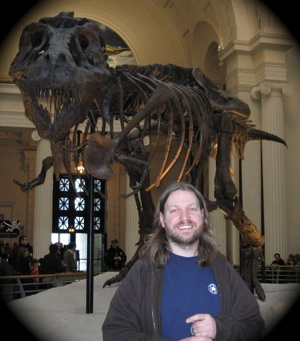

Hi, I'm Corey Haines. That's me in the picture.
I've been writing code since I was very young, probably starting around 10 or 11. When I was younger, I played a lot of games, and, back then, the source code all in BASIC, so we had access to it. When I couldn't figure out how to get past a part of the game, I started reading the code to figure out what I supposd to do. This gave me an introduction to writing programs.
When I was 15, I started learning C, the moved on to C++, using the most excellent Turbo C++ 1.0. I remember being really excited, because it was the first MDI-style editor that I had seen (previously, I had been using TurboC). I would spend a lot of time in my room writing programs.
At 18, I spent around 9 months in Berkeley, California, working at the Lawrence Berkeley Laboratory through the Science and Engineering Research Semester; I worked in the astronomy department.
From 20 to 24, I lived in Hungary, teaching English and writing small applications for myself. During this time, I learned VBA, writing an Excel application for a language school to keep track of classes, students and payroll. Using the small Excel-based database that I developed during this project, I created several language-learning-oriented applications that I used in my classes to help students learn.
When I was 24, I got a job as a web developer doing ASP (I briefly used the pre-ASP Microsoft web technology, but I prefer to forget about that). At 25, I moved into a job writing applications in Visual Basic. That was the beginning of my career, and I haven't really looked back.
In 2002, I started doing C#. In 2004, I was lucky enough to be involved in an Extreme Programming (XP) immersion training with Object Mentor, having the opportunity to learn from Bob Martin (Uncle Bob), Lowell Lindstrom and Bob Koss (Dr. Bob). At that point, my whole approach to programming changed; and, as XP tends to do, it started to affect my whole life, as well.
From 2004 until 2008, I actively searched to improve my development skills, focusing on incremental design, pair-programming and test-driven development. During the 2005 Agile Conference, I went to a talk by Dave Astels about Behavior-Driven Development. This talk changed the way I looked at my tests, and my understanding of TDD, itself, started to evolve into using it more as a design methodology.
In 2008, I switched from doing C# full-time to Ruby on Rails full-time. This was a major change in my life, as it opened up a whole new world of possibilities with my development.
In September of 2008, I lost my job, and I found that I had stashed away a few months worth of savings. This allowed me to take a step back from the day-to-day grind and look at what I might want to do with my life. That's when I decided to finally go on my pair-programming tour.
In December, 2008, I set out on the road, spending 3 weeks on the road, pair-programming with different people in exchange for room and board. It was on this initial trip that I attended the Chicago Software Craftsmanship Summit. This was a gathering of like-minded people looking to establish a sense of craftsmanship and professionalism in the software industry. The goal of the summit was to craft a Software Craftsmanship Manifesto. We came away from the meeting with a draft of sorts, and, after a bit more discussion on the mailing list, Doug Bradbury wrote what has now become the official Software Craftsmanship Manifesto.
Since then, the movement has continued to spread, and I have worked to actively promote the ideals and message of Software Craftsmanship: professionalism in both career-development and skills-development.
I've spent my time since December, 2008, traveling to pair-program in exchange for room and board. As I travel, I keep a primarily video-oriented blog around the topic of craftsmanship, called "On Being A Journeyman Software Developer." This blog contains my writings, interviews with people I meet and "Road Thoughts," monologues about the ideas that I would like to share. Since I have the opportunity to meet so many different people, I also do a series of videos called "How I Got Started In Programming" which captures people's origin stories.
I also speak at conferences and user groups while on the road.